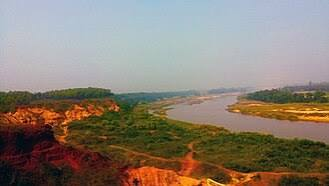

Expedition to Gangani: The Grand Canyon of Bengal

Nestled in the tranquil rural topography of Garhbeta Block 2 in Paschim Medinipur, Gangani is widely celebrated as the "Grand Canyon of Bengal". Unlike the granite gorges of the western world, Gangani is an awe-inspiring natural gorge of blood-red laterite clay, sculpted over hundreds of thousands of years by the perpetual hydrological force of the Silabati River.
🌄 Geological Formations & Mythology
The gorge descends up to 70 feet beneath the surrounding plateau, creating natural amphitheatres, labyrinths, buttresses, and cave-like formations known locally as "Rarh Bhumi". According to the ancient epic Mahabharata, this canyon was once the haunting ground of the demon Bakasura, who terrorized local villagers until Bhima defeated him in legendary single combat.
🚆 How to Reach & Transit Breakdown
- By Train: Board the Rupashi Bangla Express or Aranyak Express from Howrah Junction directly to Garhbeta Railway Station (GBA). The journey takes approximately 2 hours and 45 minutes. From the station, electric autos (Totos) reach the canyon viewpoint in 12 minutes.
- By Road: Drive along the AH45 / NH16 highway via Kharagpur and Salboni, or take the scenic route through Bishnupur along the Midnapore State Highway.
🍲 Regional Culinary Specialties
While in Garhbeta, savor authentic regional delicacies including freshly caught Silabati river carp curry, steaming hot Kashundi mustard chops, and pure cow-milk sweets from local sweetmeats shops near Garhbeta bazaar.
🏨 Explorer Stay & Accommodation Companion
Recommended eco-resorts and tourist lodges in Garhbeta, Bishnupur, and Midnapore with direct online booking checks:
 Field Research by Bibek Mahata
Field Research by Bibek Mahata